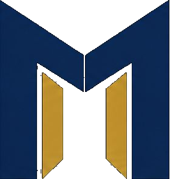
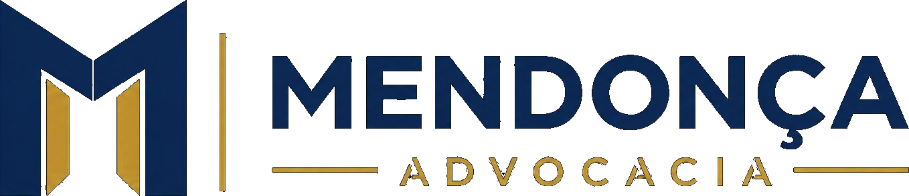

Mendonça Advocacia
A marca institucional e guarda-chuva do ecossistema Mendonça. Fundamentada em autoridade corporativa, credibilidade técnica, estabilidade jurídica e visão de grupo para proteger interesses de alta relevância.
Papel no Ecossistema
A arquitetura endossada distribui funções sem romper a confiança construída em torno do nome Mendonça. Como marca-mãe, a Mendonça Advocacia ancora as operações institucionais e outorga respaldo ético e solidez a todas as frentes de atuação.
Mendonça Advocacia
INSTITUCIONAL
Responsável por negócios corporativos, litígios estratégicos em tribunais superiores e grandes contratos. Representa a estrutura perene e a chancela jurídica do escritório.
Lúcia Carla Mendonça
PROFISSIONAL
A presença humana, a assinatura de liderança e a relação direta de confiança com clientes de alta relevância e posições executivas.
Clínica Geral da Advocacia
SERVIÇO & ACESSO
Orientação jurídica preventiva, triagem e resolução ágil. Linguagem descomplicada e direta para o dia a dia de pessoas e empresas.
DNA Compartilhado
A mesma origem, com expressões próprias. O sistema compartilha códigos rigorosos para gerar reconhecimento imediato, garantindo consistência em qualquer canal.

O Símbolo Monograma “M”
O símbolo oficial une precisão arquitetônica a um conceito espacial: a estrutura aberta do monograma evoca caminho, portal e proteção. O centro aberto com planos em perspectiva dourada simboliza portas que acolhem e orientam com segurança jurídica.
Identidade Individual & Versões do Logotipo
Extraídos diretamente da Página 06 do PDF oficial. A logo oficial da Mendonça Advocacia combina o monograma M com a barra vertical divisora, o nome institucional e a chancela de área.

01 • Versão Positiva (Principal)
Aplicação sobre fundos claros (marfim, branco, gelo). Símbolo em Navy com facetas douradas, barra e chancela ADVOCACIA em ouro, nome MENDONÇA em Navy.
02 • Versão Negativa (Alto Contraste)
Aplicação obrigatória sobre fundos escuros (navy profundo, preto ou superfícies de baixa luminosidade). Elementos em branco puro e alto contraste.
03 • Versão Monocromática (1 Cor)
Para processos técnicos, carimbos notariais, formulários fiscais, gravação a laser e impressões monocromáticas em escala de cinza ou tinta única Navy.
04 • Versão Reduzida (Símbolo Isolado)
Utilizado quando o espaço for menor que 120px: favicons, fotos de perfil em mídias sociais, selos de cera, botões de punho e microaplicações.
Área de Proteção (Respiro Mínimo)
Nenhum texto, linha, fotografia ou outro elemento gráfico pode invadir o perímetro de proteção X (equivalente à largura da coluna vertical da letra M).
Dimensões Mínimas Recomendadas
Logo Completa: Mínimo 140px de largura.
Símbolo M isolado: Mínimo 24px × 24px (Favicon: 16px × 16px).
Logo Completa: Mínimo 38 mm de largura.
Símbolo M isolado: Mínimo 8 mm de altura.
Sistema de Cores Oficiais
Cores extraídas com precisão técnica dos atributos XML srgbClr do PPTX e contrastes confirmados no PDF oficial. Clique no código para copiar instantaneamente o valor HEX.
| Amostra & Nome | Token CSS | HEX | RGB | CMYK (Est.) | Função / Contexto | Contraste |
|---|---|---|---|---|---|---|
|
Navy Dark (Ink)
|
--color-navy-dark |
7, 11, 18 | 85, 75, 55, 78 | Fundo principal escuro, capas institucionais, solidez | AAA (19.4:1) | |
|
Navy Profundo
|
--color-navy |
11, 31, 58 | 90, 72, 40, 52 | Cor âncora da marca, tipografia em fundos claros, botões | AAA (14.2:1) | |
|
Gold Oficial
|
--color-gold |
212, 167, 44 | 18, 32, 95, 2 | Assinatura de sofisticação, foil, molduras, destaques | AA (8.1:1 s/ Navy) | |
|
Gold Deep
|
--color-gold-deep |
184, 138, 24 | 24, 40, 100, 10 | Bordas de foil, estados de hover, sombra metálica | AA (6.3:1) | |
|
Ivory Base
|
--color-ivory |
246, 241, 231 | 3, 4, 8, 0 | Superfície clara nobre, papelaria, respiro visual | AAA (13.8:1 s/ Navy) | |
|
White Puro
|
--color-white |
255, 255, 255 | 0, 0, 0, 0 | Tipografia negativa, documentos timbrados, cartões | AAA (19.4:1 s/ Navy) | |
|
Slate Muted
|
--color-slate-muted |
71, 97, 124 | 65, 42, 25, 12 | Textos secundários, bordas discretas, metadados | AA (4.8:1) |
Sistema Tipográfico & Hierarquia
Documentação baseada na geometria contemporânea descrita no slide 04 e aplicada na identidade institucional.
Grid, Espaçamentos & Composição Editorial
A estética institucional da Mendonça Advocacia fundamenta-se em amplitude de margens, respiro arquitetônico e precisão milimétrica de alinhamentos.
Grid de 12 colunas, margens laterais de 80px, gutter de 32px, respiro vertical de 96px.
Grid adaptável de 8 colunas, margens de 48px, gutter de 24px, compressão harmoniosa de cards.
Coluna fluida única, margens de 20px, botões de toque mínimo de 44px de altura.
Efeitos, Luz e Acabamentos Metálicos
A experiência da Mendonça Advocacia não é chapada. Ela combina profundidade de campo, texturas sofisticadas de papel e detalhes em foil metálico.
Acabamento em baixo-relevo metálico para cartões, pastas de conferência e assinaturas premium de selo.
Papel com toque aveludado e absorção de luz para papelaria institucional, conferindo peso e seriedade.
Efeito tridimensional em cards digitais com difusão ampla (blur 30px+), simulando iluminação editorial.
Aplicações Físicas & Papelaria
Modelos baseados nas páginas 09 e 10 do PDF oficial. O cartão de visitas institucional adota corpo em Navy escuro com detalhes e monograma em foil dourado.
Cartão de Visitas Institucional (Frente & Verso)
Av. Faria Lima, 3477 • 18º Andar • São Paulo / SP
Especificação: Cartão empastado 600g, laminação soft-touch Navy, foil dourado no símbolo e linhas.
Papel Timbrado Institucional (A4)
Pareceres & Litígios Estratégicos
À Diretoria Jurídica e Conselho de Administração,
Em conformidade com a análise de conformidade regulatória e riscos estruturais, apresentamos as considerações técnicas relativas à operação societária submetida a exame...
[Conteúdo formal do documento timbrado institucional — Dados demonstrativos para homologação gráfica]
Aplicações Digitais & Mídias
A presença digital da Mendonça Advocacia projeta alta credibilidade corporativa, utilizando temas escuros profundos e linhas douradas de precisão.
Excelência Jurídica Estratégica
Atuação técnica e personalizada para proteger interesses corporativos e construir soluções sólidas em cenários de alta complexidade.
Componentes de Interface
Elementos de navegação, chamada para ação e apresentação de dados com estados interativos e conformidade de foco e contraste.
Botões Institucionais & Ações Primárias
Cards de Destaque & Indicadores
Diretrizes de Uso: Do & Don't
Exemplos visuais de boas práticas obrigatórias e usos estritamente proibidos para resguardar a integridade da marca.
Logo negativa sobre Navy Profundo
Garante legibilidade máxima e alto contraste com elegância e fidelidade.
Logo positiva sobre fundo escuro
Nunca aplique a versão com texto azul em superfícies pretas ou navy. Inviabiliza a leitura.
Respiro e proporção mantidos
Margens de segurança respeitadas e proporção original intacta sem distorções horizontais.
Distorção dimensional ou achatamento
É terminantemente proibido esticar, condensar ou alterar o aspect ratio da logo.
Tokens CSS Custom Properties
Variáveis prontas para integração em aplicações web corporativas, portais institucionais e sistemas de documentação.
:root {
/* Cores Oficiais Mendonça Advocacia (PPTX & PDF) */
--color-navy-dark: #070B12; /* Fundo Institucional / Ink */
--color-navy: #0B1F3A; /* Cor Âncora Principal */
--color-navy-slate: #17202D; /* Superfície Secundária */
--color-gold: #D4A72C; /* Assinatura Dourada Oficial */
--color-gold-deep: #B88A18; /* Dourado Escuro / Foil */
--color-ivory: #F6F1E7; /* Marfim Base */
--color-white: #FFFFFF; /* Branco Puro */
--color-slate-muted: #47617C; /* Texto Secundário */
/* Tipografia */
--font-family-sans: "Plus Jakarta Sans", -apple-system, BlinkMacSystemFont, "Segoe UI", Roboto, sans-serif;
--font-family-serif: "Playfair Display", Georgia, serif;
--font-family-mono: ui-monospace, Menlo, Consolas, monospace;
/* Escala de Espaçamento */
--space-unit: 8px;
--space-1: 4px;
--space-2: 8px;
--space-3: 12px;
--space-4: 16px;
--space-6: 24px;
--space-8: 32px;
--space-12: 48px;
--space-16: 64px;
/* Sombras & Acabamento */
--shadow-subtle: 0 4px 12px rgba(7, 11, 18, 0.08);
--shadow-elevation: 0 16px 40px rgba(7, 11, 18, 0.16);
--shadow-gold: 0 8px 25px rgba(212, 167, 44, 0.25);
--grad-gold: linear-gradient(135deg, #D4A72C 0%, #F7D570 50%, #B88A18 100%);
--grad-navy: linear-gradient(135deg, #070B12 0%, #0B1F3A 60%, #17202D 100%);
/* Grid & Breakpoints */
--breakpoint-desktop: 1440px;
--breakpoint-tablet: 1024px;
--breakpoint-mobile: 390px;
--container-max-width: 1200px;
}Matriz de Decisões & Origem Técnica
Rastreabilidade completa de cada elemento deste Design System mapeado contra o PPTX e o PDF de referência.
| Item / Elemento | Fonte PPTX | Fonte PDF | Status | Justificativa Técnica |
|---|---|---|---|---|
| Logotipo Oficial (Positivo & Negativo) | Slide 05 (mockup) | Página 06 (vetores) | Aprovado | Extraído diretamente do fluxo de imagem com canal alfa do PDF oficial. |
| Cores Oficiais (Navy & Gold) | Slide XML srgbClr |
Páginas 04, 06, 10 | Extraído | Códigos HEX #070B12, #0B1F3A, #D4A72C nativos do arquivo estrutural. |
| Arquitetura da Marca | Slide 03 | Página 03 | Aprovado | Classificação exata como marca institucional e guarda-chuva do ecossistema. |
| Regras de Uso e 4 Versões | Não incluído | Página 07 | Aprovado | Adotado integralmente do PDF (versões Principal, Negativa, Monocromática e Reduzida). |
| Cartão de Visitas Institucional | Slide 07 e 08 | Páginas 09 e 10 | Aprovado | Mendonça Advocacia definida com base Navy escuro e detalhes em ouro. |
| Fontes e Tipografia | Calibri (Tema) | ArialMT / BoldMT | Substituição | Fontes de sistema usadas como substituição; confirmação da fonte comercial pendente. |
| Dados de Contato e Endereço | Ausente | Ausente | Demonstrativo | Utilizados dados demonstrativos com aviso de substituição para produção final. |